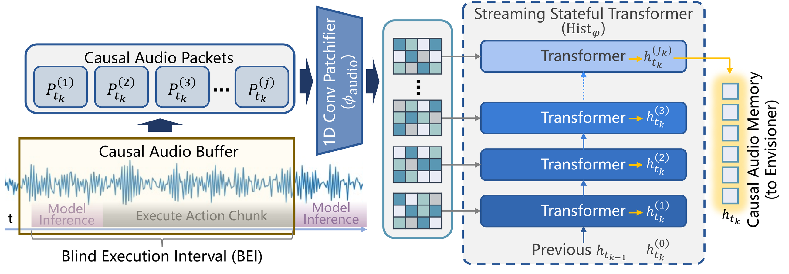
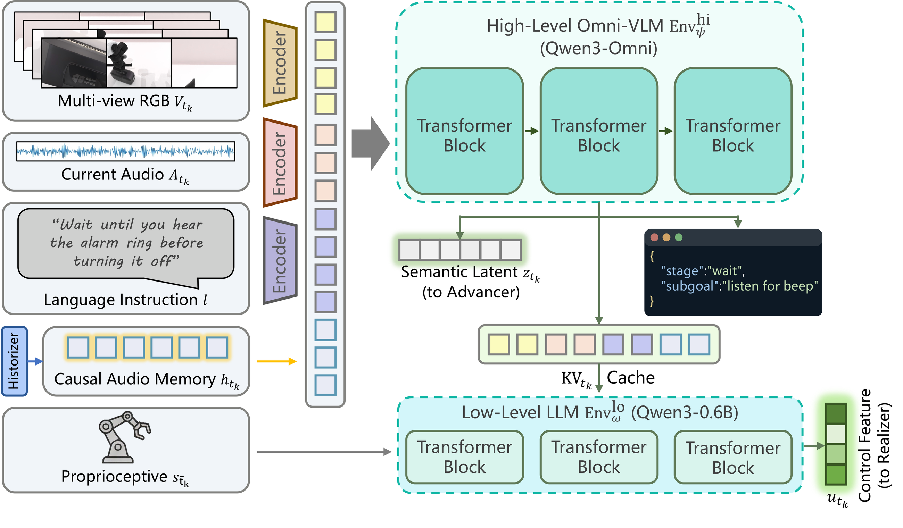
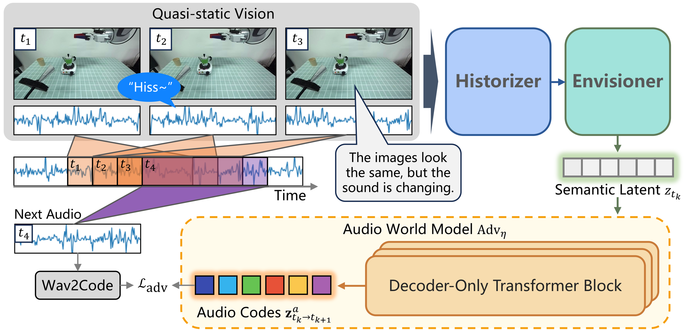

Problem setting
Sound-causal manipulation
The policy must remember acoustic cues and avoid visually plausible but acoustically premature actions.
Vision-Sound-Language-Action
A sound-centric manipulation framework that extends VLA toward robots that see, hear, remember, and react.
From VLA to VSLA
Standard VLA policies work well when the useful evidence stays visible: a cup remains on the table, a drawer stays open, or a target object remains in view. Sound-centric tasks are different. The decisive cue may be a short beep, collision click, process sound, or spoken confirmation that happens between two policy queries.
HEAR extends the control setting to Vision-Sound-Language-Action. The robot receives delayed multi-view vision, causal audio, language, and proprioception, then must preserve fleeting evidence across open-loop action chunks before deciding when to move.
Problem setting
The policy must remember acoustic cues and avoid visually plausible but acoustically premature actions.
Long-horizon process
A process-monitoring task where completion is more clearly indicated by sound than by a static camera view.
Framework

System overview
HEAR processes streaming sound, reasons over multimodal context, predicts near-future audio, and generates smooth action chunks.

Historizer
A stateful transformer compresses recent audio packets so short cues can survive execution gaps.

Envisioner
High-level and low-level reasoning fuse vision, language, proprioception, current sound, and audio memory.

Advancer and Realizer
Future-audio prediction grounds long waiting phases, while conditional flow matching produces smooth robot actions.
VSLA
Each decision is conditioned on vision, causal audio, language, and robot state rather than a static audio snapshot.
OpenX-Sound
The project releases a synchronized sound extension of Open X-Embodiment for large-scale robot trajectory learning.
HEAR-Bench
The benchmark penalizes premature visual actions and tests whether the policy truly waits for the required acoustic cue.
Training and Evaluation
The simulation benchmark includes alarm, microwave, speech timing, interruption, material checking, water pouring, and boiling tasks. These tasks stress waiting, transient triggers, prosody, impact acoustics, and long-horizon process monitoring.
Real-robot deployment adds room reverberation, background noise, mechanical ego-noise, and visual aliasing. The tasks include coffee monitoring, answering a phone, shaking bottles for active acoustic sensing, and real alarm-clock reaction.
Simulation
The source project reports strong gains on sound-causal simulation tasks.
Real robot
The real-robot suite emphasizes acoustic domain shift and physically grounded sound cues.
Dataset
Audio-augmented robot trajectories released on Hugging Face.
Experiment Videos
Process sound
The robot must monitor the acoustic transition before pouring.
Transient trigger
A waiting task where the robot should react only after the relevant sound occurs.
Speech timing
The policy conditions progress on spoken confirmation rather than a static visual state.
Interruption
The robot must preserve and react to a brief acoustic event during execution.
Full video set
The original page includes additional large real-robot videos and robot-perspective input recordings.
Robustness
Ablations test traffic noise, white noise, robot ego-noise, dialogue noise, microphone shifts, object shifts, distractors, and speech variants.
Design principle
The benchmark rewards policies that stay sound-causal rather than acting on visually tempting shortcuts.